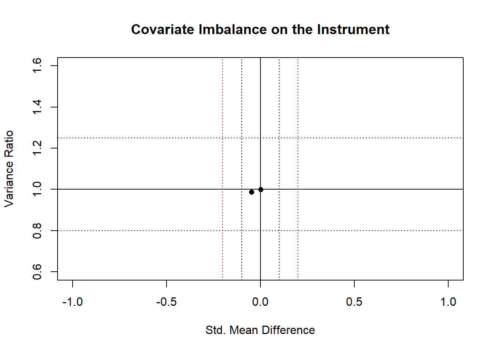
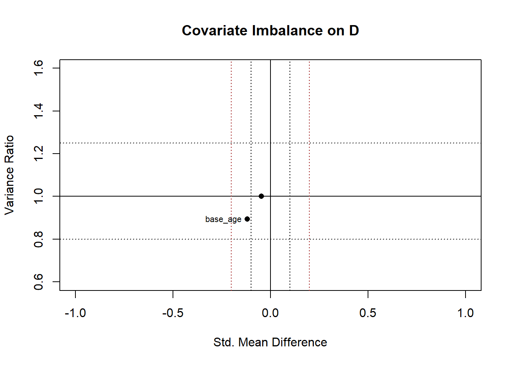

Part 9 Practice with Instrumental Variable Estimation
In this continuation of the instrument variable estimation (IVE), we use data from Chapter 11 of Murnane and Willett (2011).
9.1 Objectives
- Compare the covariate balance on the instrumental variable with that on the endogenous question predictor
- Generate the compliance table and see again that this is the estimate in the first stage
- Practice estimating LATE.
For parts of this lesson, the code is omitted so you can use it yourself and compare your results. You can use the sem (Fox et al., 2020), AER (Kleiber & Zeileis, 2020), and systemfit (Henningsen & Hamann, 2019) packages, which we used in the previous lesson.
9.2 Import and Prepare the Data
The data were available as a SAS data set from UCLA’s site, which I had then saved to a CSV file Ch11_colvoucher using the following code.
library(sas7bdat) # package for reading SAS files
cv <- read.sas7bdat("https://stats.idre.ucla.edu/wp-content/uploads/2016/02/colvoucher.sas7bdat")
write.csv(cv, file = "Ch11_colvoucher", row.names = F)If we are starting from the csv file on your local machine, we can read it in:
cv <- read.csv("Ch11_colvoucher.csv")Let’s see if there are any missing data and make sure the variables are numeric.
apply(cv, 2, function(x){sum(is.na(x))})## id won_lottry male base_age finish8th use_fin_aid
## 0 0 0 0 0 0str(cv)## 'data.frame': 1171 obs. of 6 variables:
## $ id : int 3 4 5 6 10 11 12 15 16 17 ...
## $ won_lottry : int 1 0 0 0 1 1 0 1 0 0 ...
## $ male : int 0 1 1 0 1 0 0 0 1 0 ...
## $ base_age : int 11 11 11 9 11 11 11 12 12 14 ...
## $ finish8th : int 1 1 1 0 1 1 1 1 0 1 ...
## $ use_fin_aid: int 1 1 0 0 1 1 0 1 0 1 ...We can look at the names of the columns. Here, we’re wrapping data.frame() around the names() function to also see the number of column index.
data.frame(names(cv)) ## names.cv.
## 1 id
## 2 won_lottry
## 3 male
## 4 base_age
## 5 finish8th
## 6 use_fin_aidWe can save our variable names in an object.
(vnames<- names(cv[,c(5,6,4,3)])) ## [1] "finish8th" "use_fin_aid" "base_age" "male"9.2.1 Descriptive statistics
Here are the descriptive statistics, matching those in Table 11.1 (p. 270).
apply(cv[, c(vnames, "won_lottry" )],2, mean)## finish8th use_fin_aid base_age male won_lottry
## 0.6814688 0.5815542 12.0042699 0.5046968 0.5055508We can use a custom function to get the rest of the table.
mydesc <- function(x,grp){
Mby <- by(x,grp, mean)
Meanc <- Mby[[1]]
Meant <- Mby[[2]]
SDby <-by(x,grp, sd)
SDc <- SDby[[1]]
SDt <- SDby[[2]]
fit <- summary(lm(x ~ grp))
est <- coef(fit)[2,1]
stderr<- coef(fit)[2,2]
t <- coef(fit)[2,3]
p <- coef(fit)[2,4]
out <-c(Mt=Meant, SDt=SDt, Mc=Meanc, SDc=SDc,
diff= est, se=stderr, tstat= t, pr=p)
round(out,3)
} t(round(sapply(cv[, vnames],
FUN = mydesc,
grp = cv$won_lottry),2))## Mt SDt Mc SDc diff se tstat pr
## finish8th 0.74 0.44 0.62 0.48 0.11 0.03 4.11 0.00
## use_fin_aid 0.92 0.28 0.24 0.43 0.68 0.02 32.11 0.00
## base_age 11.97 1.34 12.04 1.35 -0.06 0.08 -0.80 0.42
## male 0.50 0.50 0.50 0.50 0.00 0.03 0.03 0.989.3 Covariate Balance
Let’s check the balance of the two covariates on the instrument. First, let’s put the names of our covariates in an object so we don’t have to keep retyping them:
mycovs <- c("male", "base_age")
select.diff <- function(x, grp) {
mby <- unlist(by(x, grp, mean, na.rm=T))
vby <- unlist(by(x, grp, var , na.rm=T))
mc <- mby[1]
mt <- mby[2]
vc <- vby[1]
vt <- vby[2]
B <- (mt-mc)/sqrt((vt+vc)/2)
R <- vt/vc
out <- summary(lm(x ~ grp))
out2 <- c(out$coef[2, c(1:2, 4)], B, R)
names(out2)<- c("MeanDiff", "StdError", "p-value", "StdMeanDiff", "VarRatio")
out2
}
bal <- t(sapply(cv[, mycovs], select.diff, grp = cv$won_lottry)) #our grp is the won_lottery IV
round(bal, 3)## MeanDiff StdError p-value StdMeanDiff VarRatio
## male 0.001 0.029 0.980 0.001 1.000
## base_age -0.063 0.079 0.422 -0.047 0.987We can plot these imbalance data:55
B <- bal[, "StdMeanDiff"]
R <- bal[, "VarRatio"]
plot(B, R, xlim = c(-1, 1), ylim = c(.6, 1.6), pch = 16,
main = 'Covariate Imbalance on the Instrument', xlab = 'Std. Mean Difference', ylab = 'Variance Ratio')
abline(h = 1, v = 0)
abline(h = c(4/5, 5/4), v = c(-.1, .1), lty = 3) #Adding Rubin's benchmarks
abline(v = c(-.2, .2), lty = 15, col="brown") #More lenient (but common) std.M-diff benchmarks
# Labels of the imbalanced covariates
ind <- (abs(B) > .1 | R < 4/5 | R > 5/4)
if(sum(ind) > 0) text(x = B[ind],y = R[ind],labels = mycovs[ind], pos = 2 + 2*(B[ind] > 0), offset = .4, cex = .7)Conclusion. Neither of the covariates is imbalanced. This is consistent with the lottery being a random award among the same population. It adds support to our claim that our instrument (symbolized as \(Z\) or \(I)\) is exogenous. If we had found some imbalance, it might have been due to chance or it might have been due to some other third-path mechanism (and we would be sure to include those out-of-balance covariates in our first-stage model). This is evidence is only slightly comforting, however, because there still may be bias through coviariates we have not measured. Again, the exclusion restriction is hard to prove unless our instrument is by nature not related to the outcome variable, such as a random lottery.56
9.3.1 Covariate balance on \(D\)
Let’s examine covariate balance with our endogenous question predictor. We don’t need to do this because we already believe that \(D\) is endogenous; it is likely related to our observed or unobserved variables. This is simply for demonstration that we might observe imbalance here because unlike the lottery, use_fin_aid is a choice.
bal <- t(sapply(cv[, mycovs], select.diff,
grp = cv$use_fin_aid)) # our grp is the won_lottery IV
round(bal, 3)## MeanDiff StdError p-value StdMeanDiff VarRatio
## male -0.024 0.03 0.428 -0.047 1.001
## base_age -0.161 0.08 0.043 -0.119 0.894Sure enough, we have one covariate out of balance, base_age. The group that used the financial aid had children who were younger. Looking at it from the other direction, the older children were less likely to use fin aid than younger students—about 16% less likely to use financial aid per one year of age. This might be by chance, but it is noteworthy that this covariate was not unbalanced with the instrumental variable but that it is with the question predictor.
We can view the plot by reusing the plot code.

9.4 Compliance Table
Let’s report the compliance table of the the relationship between the instrument, won_lottry, and the question predictor, use_fin_aid. The code is withheld here so you can practice this.
## use_fin_aid
## won_lottry 0 1
## 0 440 139
## 1 50 542## use_fin_aid
## won_lottry 0 1
## 0 0.760 0.240
## 1 0.084 0.916Among the children who won the lottery, 91.6% used financial aid. 8.4% did not take it up. This is assumed to represent the proportion in the population who are never takers; presumably, the control group has this same proportion of this type of children. Similarly, the 24% of crossovers from the control group represents the proportion of the population who are always takers; it is assumed that this same proportion is present in the treatment group.
9.5 Estimating the Causal Effect
9.5.1 The naïve estimate
Let’s estimate the effect of the endogenous question predictor on the outcome variable, which is what is reported on the bottom right of Table 11.2 (p. 273). This is the naïve (prima facie) estimate because we are not accounting for bias and therefore cannot claim that this is an estimate of the causal effect. The code is suppressed here so you can do it on your own.
## Estimate Std. Error t value Pr(>|t|)
## (Intercept) 1.410 0.121 11.694 0.000
## use_fin_aid 0.121 0.027 4.511 0.000
## base_age -0.063 0.010 -6.395 0.000
## male -0.086 0.026 -3.243 0.0019.5.2 The LATE estimate from IVE
Let’s compare this with the LATE from instrumental-variable estimation.
Here’s the first stage. The code is suppressed here so you can recreate it.
## Estimate Std. Error t value Pr(>|t|)
## (Intercept) 0.433 0.095 4.548 0.000
## won_lottry 0.675 0.021 32.099 0.000
## base_age -0.015 0.008 -1.937 0.053
## male -0.020 0.021 -0.961 0.337Here’s the second stage, with the estimate of use_fin_aid being the parameter of interest in our causal claim:
## Estimate Std. Error t value Pr(>|t|)
## (Intercept) 1.378 0.123 11.196 0.000
## use_fin_aid 0.159 0.039 4.059 0.000
## base_age -0.062 0.010 -6.296 0.000
## male -0.085 0.027 -3.213 0.001If you use the AER package, you can get the same results and the \(R^2\).
## [1] 0.062If you use the systemfit package, you can see these results:
## [[1]]
##
## 2SLS estimates for 'eq1' (equation 1)
## Model Formula: use_fin_aid ~ won_lottry + base_age + male
## Instruments: ~won_lottry + base_age + male
##
## Estimate Std. Error t value Pr(>|t|)
## (Intercept) 0.43275985 0.09515937 4.54774 5.988e-06 ***
## won_lottry 0.67452704 0.02101411 32.09877 < 2.22e-16 ***
## base_age -0.01516041 0.00782603 -1.93718 0.052965 .
## male -0.02025709 0.02107003 -0.96142 0.336542
## ---
## Signif. codes: 0 '***' 0.001 '**' 0.01 '*' 0.05 '.' 0.1 ' ' 1
##
## Residual standard error: 0.359427 on 1167 degrees of freedom
## Number of observations: 1171 Degrees of Freedom: 1167
## SSR: 150.76248 MSE: 0.129188 Root MSE: 0.359427
## Multiple R-Squared: 0.470938 Adjusted R-Squared: 0.469577
##
##
## [[2]]
##
## 2SLS estimates for 'eq2' (equation 2)
## Model Formula: finish8th ~ use_fin_aid + base_age + male
## Instruments: ~won_lottry + base_age + male
##
## Estimate Std. Error t value Pr(>|t|)
## (Intercept) 1.37812758 0.12308958 11.19614 < 2.22e-16 ***
## use_fin_aid 0.15900020 0.03917327 4.05890 5.2589e-05 ***
## base_age -0.06215735 0.00987246 -6.29603 4.3146e-10 ***
## male -0.08514482 0.02650360 -3.21258 0.0013515 **
## ---
## Signif. codes: 0 '***' 0.001 '**' 0.01 '*' 0.05 '.' 0.1 ' ' 1
##
## Residual standard error: 0.451949 on 1167 degrees of freedom
## Number of observations: 1171 Degrees of Freedom: 1167
## SSR: 238.369037 MSE: 0.204258 Root MSE: 0.451949
## Multiple R-Squared: 0.062233 Adjusted R-Squared: 0.0598229.5.3 Making the intercept meaningful
Another thing we could do is make the intercept more meaningful. Notice that the intercept in our Table 11.2 models was out of logical bounds (not between 0 and 1). Let’s re-center age so that the intercept is no longer when students are Age 0, but when they’re 12. That will give us an intercept that estimates students who did not use financial aid, were not offered the lottery, were female, and were Age 12.
## Estimate Std. Error t value Pr(>|t|)
## (Intercept) 0.632 0.030 21.203 0.000
## use_fin_aid 0.159 0.039 4.059 0.000
## ageC -0.062 0.010 -6.296 0.000
## male -0.085 0.027 -3.213 0.001Now, the intercept makes sense. The test statistics for the question predictor and the covariates are unchanged.
References
We added the
if(sum(ind) > 0)because without it, an error is printed in the console because in this case the number of covariates out of balance is 0.↩︎Still, as with any randomized experiment, we may encounter SUTVA violations. There may be mechanisms such as resentful demoralization or John Henry effect due to the treatment-group assignment. These mechanisms would directly relate assignment to \(Z\) with the outcome, \(Y\), violating the exclusion principle. We could use reasoning to argue that these effects on \(Y\) not likely, however, if our treatment is very long in duration, as it is in this study. Most people who hold grudges or over-compensate would probably not be able to sustain their response to Z through the life of the experiment.↩︎